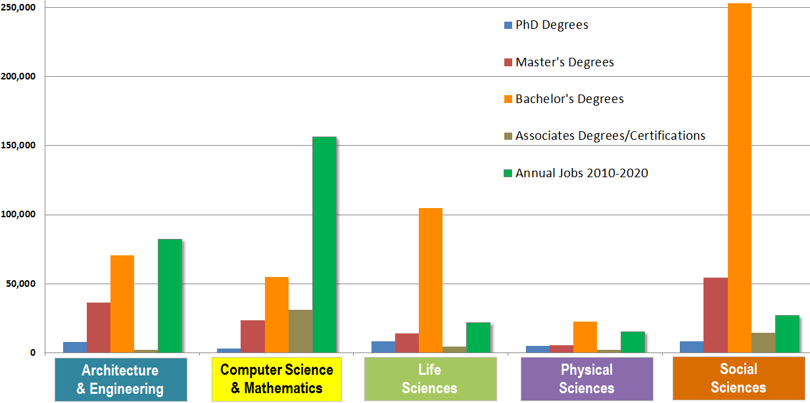
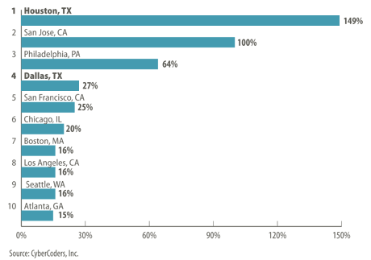

Computer Science:
Research, Industry, and Entrepreneurship
About me
-
Research
Ph.D. candidate in the Department of Computer Science and Engineering at USC -
Industry
Project manager at the OpenIT Lab -
Entrepreneurship
Technical lead at Huntstand, Inc., a social networking startup company
Online
I write lots of code on github.com/malloc47
and blog on my website malloc47.com
These slides are available here:
Misconceptions
It's all Programming

It's all Math

CS == IT

Why CS?
Jobs
Pay
$90,530
(2010 median salary)
http://www.bls.gov/ooh/Computer-and-Information-Technology/Software-developers.htm
Growth

(2011 figures)
Perks
| FullContact | Paid Paid Vacation |
| eBay | Rafting trips |
| Genentech | Onsite child and animal daycare |
| Dogs allowed in the office | |
| Four months paid materity/paternity leave | |
| Microsoft | Bus service (with wi-fi) directly to work |
| Netflix | No counting vacation days |
| Dropbox | Sound-proof music studio |
| Treehouse | Four day work week |
| 37 Signals | Company credit card for everyone |
Interdisciplinary
| Bioinformatics | CS + Biology |
| Data Science | CS + Statistics |
| Theory | CS + Math |
| Information Technology Policy | CS + Law |
| Management Information Systems | CS + Business |
| Health Informatics | CS + Health Care |
| Digital Humanities | CS + Humanities |
Computer Scientists are the blacksmiths of the 21st century.
Job Categories
Research • Industry • Entrepreneurship
Research
Areas
- p
- Artificial Intelligence
- Multi-Agent Systems
- Computer Vision
- Machine Learning
- Bioinformatics
- Computer and Network Security
- Graphics
- Human-Computer Interaction
- Natural Language Processing
- Programming Languages and Compilers
- Robotics
- Theory
What do you do in Research?
- Create prototypes of research ideas
(code/hardware)
- Build software (code)
- Construct hardware
- Collect data
- Experiment by running prototype on lots of data
- Supercomputers/clusters
- Write papers and publish results
- Conferences count a lot more than journals
- Very different from an essay--lots of figures
Jobs in Research?
- College professor
- Industrial research (Microsoft, Siemens, ...)
- Finance (high frequencey trading)
- Data science
Requirements
- Degree: Ph.D. or M.S.
- Aptitude for math
- Skilled in programming
My Research
Industry
Areas
- Software Engineering
- Dev-Ops
- Operations / Systems Administration
- Testing
- Consultant
- Contractor
What do you do in Industry?
- Work on complex systems
- Build products (technology companies)
- Provide support for other engineers
- Manage huge clusters of computers
- Process large amounts of data
Top Technology Companies
- Apple
- HP
- IBM
- Microsoft
- Dell
- Amazon.com
- Intel
My Projects
Entrepreneurship
Building new technology companies
What is a startup?
A startup is a company designed to grow fast. Being newly founded does not in itself make a company a startup. Nor is it necessary for a startup to work on technology, or take venture funding, or have some sort of "exit." The only essential thing is growth. Everything else we associate with startups follows from growth. --Paul Graham
Building a Company
- Start with an industry and an idea to fix it
- Find "Co-Founders" to complement your skills
- Build a Minimum Viable Product (MVP)
- Get funding to continue growing
- Keep growing
Skills Needed
- Programming
- Systems Administration
- Testing
- Product management
- Marketing
- Business administration
- ...